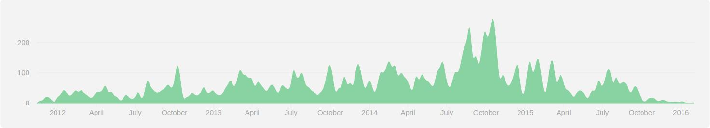

La plateforme JS 360°
par Evan Liomain
A propos de moi
Developpeur front @SFEIR
Un peu de context


Enjeux
- UI/UX Moderne
- Pas de rafraichissement manuel
- Compatible tout navigateur, mobile et plus
- Donnée en temps réel
Plateformes historiques du marché
Inconvénients
- Langage client/serveur différent (hors java avec GWT)
- Pas de partage de code entre client et serveur
- donc pas d'isomorphisme
Solution
La plateforme JS
JS Big Picture
Un autre framework de plus ?
Qui est derrière le rideau ?

- MDG : Meteor Development Group (fondé en 2011)
- La communauté
Depuis combien de temps ?
Premier commit github le 18/11/2011
v0.0.40 le 11/12/2011
v1.0 le 17/03/2015
v1.1 le 31/03/2015
v1.2 le 21/09/2015
v1.3 actuellement en beta
Fonctionnalités du client en ligne de commande
- Package manager : atmosphere ou fastosphere
- App builder
-
Conteneur mobile cordova

- Solution de hosting de demo et de production : Galaxy
Soft et framework associé
-
Base de donnée MongoDB 3.0
 et MiniMongo
et MiniMongo
- Gestionnaire de websocket
-
Moteur de templating :
- Blaze, par défaut
-
AngularJS
 depuis 1.2
depuis 1.2 - ReactJS
 depuis 1.2
depuis 1.2
ES2015 Support
-
Depuis 1.2
- Babel + polyfills
-
Bientôt avec 1.3
- Modules ES2015
OS supportés
- Mac OSX
- Linux

- Windows depuis 1.1
Par où commencer ?
Installation
Pour Mac & Linux
curl https://install.meteor.com/ | sh
Pour Windows
installer
Création du projet
meteor create my-project
cd my-project
- Fichier de demo : my-project.js, my-project.html, my-project.css
- Répertoire : .meteor
- Configure correctement les .gitignore
Lancement du projet en local
meteorDéploiement sur un environnement de demo ou sur galaxy
meteor deploy my_awesome_project.meteor.comDéploiement sur un autre serveur ?
Plus compliqué, mais peu être fait via des package npm tierce comme :
Comment ça marche ?
Architecture générale
3 types de code
Dans le même fichier
if (Meteor.isServer) {
// Exécuté sur le serveur
}
if (Meteor.isClient) {
// Exécuté dans le navigateur web
}
// Exécuté sur le serveur et le client
3 types de code
Dans des fichiers différents
-
user
-
client
- user.ui.js
-
server
- user.publish.js
- user.model.js
-
client
Quels fichiers sont-ils buildés ?
- code serveur : tous fichiers hors client, tests, public, et private
- code client : tous fichiers hors server, tests, public, et private
- asset serveur : tous fichiers contenu dans private
-
asset client : tous fichiers contenu dans public, servis tels quels
-
exemple : pour public/bg.png

-
exemple : pour public/bg.png
Dans quel ordre sont-ils buildés ?
- Template HTML en premier
-
Pour un répertoire donnée, les fichiers :
- du sous-répertoire lib/ sont chargés en premier
- sont chargés par ordre alphabêtique
- des sous-répertoires (hors lib/)
- main.* sont chargés en dernier
Un peu de code
Utilisation d'un document MongoDB
Création
MyList = new Mongo.Collection('myList');Récupération
MyList.find({});Insertion
MyList.insert({
text : 'example',
createdAt : new Date() // current time
});
Edition
MyList.update(this._id, {
$set : { text : 'new example' }
});
Suppression
MyList.remove(this._id);
Utilisation d'un package
Authentification OAUTH de google
Ajout des packages
meteor add accounts-ui accounts-googleCréation de votre projet sur la console google
Configuration (server)
ServiceConfiguration.configurations.upsert({
service : 'google'
}, {
$set : {
clientId : '{votre client id}',
loginStyle : 'popup',
secret : '{votre secret}'
}
});
Affichage
{{> loginButtons}}
{{#if currentUser}} Vous êtes connecté {{/if}}
Retour d'EXpérience
Le projet
- Une liste de course partagée
- Authentification oauth google
- Disponible en web app et mobile
La stack
- Meteor 1.2
- Angular 1.4
- Angular Material
Points forts
- Pas de gestion de build à s'occuper
- Base de donnée disponible sans effort
- Données temps réel disponible sans effort
- Déploiement sur l'environnement de demo
- Code serveur, client et mobile partagé
- Livereload client et serveur
- Package e2e
- Composant material-design à disposition
- Simplicité d'utilisation d'angular
Points faibles
- Build et livereload + lent que si fait avec gulp
- Indisponibilité de la plateforme de demo pendant que le serveur charge l'app
-
Tout développement s'accompagne des contraintes mobile :
- Taille de l'écran
- Réseau lent
- Gestion du touch
Quelques liens utiles
Liens officiels
- Le site meteor.com
- Le blog
- La chaine youtube
- Le guide
Quelques liens utiles
En français
Quelques liens utiles
Avec ReactJS
- Site de react-in-meteor
Quelques liens utiles
Avec AngularJS
- Site d'angular-meteor.com
- Présentations d'angular-meteor par Uri Goldshtein à :